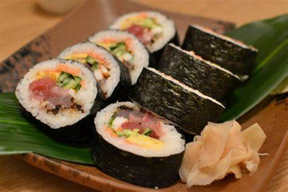

Galería
Un ambiente acogedor donde disfrutar de nuestros deliciosos makis.
La magia de la cocina: preparación de nuestros makis frescos.

Plato especial de makis, una explosión de sabores.

Variedad de sushi para satisfacer todos los gustos.
Momentos compartidos: nuestros clientes disfrutando.